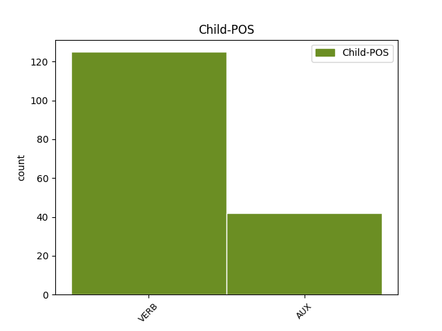

Distribution of features within this leaf


Agreement Rules sorted by frequency.
- When the dependent token is the dislocated elements(dislocated) of the head token, and the head token is VERB and the dependent token is VERB.
1 Ut _ _ _ _ 0 _ _ _
2 enim _ _ _ _ 0 _ _ _
3 sermone _ _ _ _ 0 _ _ _
4 eo _ _ _ _ 0 _ _ _
5 debemus debeo VERB V- Mood=Ind|Number=Plur|Person=1|Tense=Pres|VerbForm=Fin|Voice=Act 29 dislocated _ ref=1.111
6 uti _ _ _ _ 0 _ _ _
7 qui _ _ _ _ 0 _ _ _
8 innatus _ _ _ _ 0 _ _ _
9 est _ _ _ _ 0 _ _ _
10 nobis _ _ _ _ 0 _ _ _
11 ne _ _ _ _ 0 _ _ _
12 ut _ _ _ _ 0 _ _ _
13 quidam _ _ _ _ 0 _ _ _
14 Graeca _ _ _ _ 0 _ _ _
15 verba _ _ _ _ 0 _ _ _
16 inculcantes _ _ _ _ 0 _ _ _
17 iure _ _ _ _ 0 _ _ _
18 optimo _ _ _ _ 0 _ _ _
19 rideamur _ _ _ _ 0 _ _ _
20 sic _ _ _ _ 0 _ _ _
21 in _ _ _ _ 0 _ _ _
22 actiones _ _ _ _ 0 _ _ _
23 omnem _ _ _ _ 0 _ _ _
24 que _ _ _ _ 0 _ _ _
25 vitam _ _ _ _ 0 _ _ _
26 nullam _ _ _ _ 0 _ _ _
27 discrepantiam _ _ _ _ 0 _ _ _
28 conferre _ _ _ _ 0 _ _ _
29 debemus debeo VERB V- Mood=Ind|Number=Plur|Person=1|Tense=Pres|VerbForm=Fin|Voice=Act 0 _ _ _
1 Ut _ _ _ _ 0 _ _ _
2 venustas _ _ _ _ 0 _ _ _
3 et _ _ _ _ 0 _ _ _
4 pulchritudo _ _ _ _ 0 _ _ _
5 corporis _ _ _ _ 0 _ _ _
6 secerni _ _ _ _ 0 _ _ _
7 non _ _ _ _ 0 _ _ _
8 potest possum VERB V- Mood=Ind|Number=Sing|Person=3|Tense=Pres|VerbForm=Fin|Voice=Act 20 dislocated _ ref=1.95
9 a _ _ _ _ 0 _ _ _
10 valetudine _ _ _ _ 0 _ _ _
11 sic _ _ _ _ 0 _ _ _
12 hoc _ _ _ _ 0 _ _ _
13 de _ _ _ _ 0 _ _ _
14 quo _ _ _ _ 0 _ _ _
15 loquimur _ _ _ _ 0 _ _ _
16 decorum _ _ _ _ 0 _ _ _
17 totum _ _ _ _ 0 _ _ _
18 illud _ _ _ _ 0 _ _ _
19 quidem _ _ _ _ 0 _ _ _
20 est sum AUX V- Mood=Ind|Number=Sing|Person=3|Tense=Pres|VerbForm=Fin|Voice=Act 0 _ _ _
21 cum _ _ _ _ 0 _ _ _
22 virtute _ _ _ _ 0 _ _ _
23 confusum _ _ _ _ 0 _ _ _
24 sed _ _ _ _ 0 _ _ _
25 mente _ _ _ _ 0 _ _ _
26 et _ _ _ _ 0 _ _ _
27 cogitatione _ _ _ _ 0 _ _ _
28 distinguitur _ _ _ _ 0 _ _ _
1 Animadvertendum _ _ _ _ 0 _ _ _
2 est _ _ _ _ 0 _ _ _
3 etiam _ _ _ _ 0 _ _ _
4 quatenus _ _ _ _ 0 _ _ _
5 sermo _ _ _ _ 0 _ _ _
6 delectationem _ _ _ _ 0 _ _ _
7 habeat _ _ _ _ 0 _ _ _
8 et _ _ _ _ 0 _ _ _
9 ut _ _ _ _ 0 _ _ _
10 incipiendi _ _ _ _ 0 _ _ _
11 ratio _ _ _ _ 0 _ _ _
12 fuerit sum AUX V- Aspect=Perf|Mood=Sub|Number=Sing|Person=3|Tense=Past|VerbForm=Fin|Voice=Act 14 dislocated _ ref=1.135
13 ita _ _ _ _ 0 _ _ _
14 sit sum AUX V- Mood=Sub|Number=Sing|Person=3|Tense=Pres|VerbForm=Fin|Voice=Act 0 _ _ _
15 desinendi _ _ _ _ 0 _ _ _
16 modus _ _ _ _ 0 _ _ _
1 Ut _ _ _ _ 0 _ _ _
2 enim _ _ _ _ 0 _ _ _
3 in _ _ _ _ 0 _ _ _
4 corporibus _ _ _ _ 0 _ _ _
5 magnae _ _ _ _ 0 _ _ _
6 dissimilitudines _ _ _ _ 0 _ _ _
7 sunt sum AUX V- Mood=Ind|Number=Plur|Person=3|Tense=Pres|VerbForm=Fin|Voice=Act 29 dislocated _ ref=1.107
8 alios _ _ _ _ 0 _ _ _
9 videmus _ _ _ _ 0 _ _ _
10 velocitate _ _ _ _ 0 _ _ _
11 ad _ _ _ _ 0 _ _ _
12 cursum _ _ _ _ 0 _ _ _
13 alios _ _ _ _ 0 _ _ _
14 viribus _ _ _ _ 0 _ _ _
15 ad _ _ _ _ 0 _ _ _
16 luctandum _ _ _ _ 0 _ _ _
17 valere _ _ _ _ 0 _ _ _
18 itemque _ _ _ _ 0 _ _ _
19 in _ _ _ _ 0 _ _ _
20 formis _ _ _ _ 0 _ _ _
21 aliis _ _ _ _ 0 _ _ _
22 dignitatem _ _ _ _ 0 _ _ _
23 inesse _ _ _ _ 0 _ _ _
24 aliis _ _ _ _ 0 _ _ _
25 venustatem _ _ _ _ 0 _ _ _
26 sic _ _ _ _ 0 _ _ _
27 in _ _ _ _ 0 _ _ _
28 animis _ _ _ _ 0 _ _ _
29 exsistunt exsisto VERB V- Mood=Ind|Number=Plur|Person=3|Tense=Pres|VerbForm=Fin|Voice=Act 0 _ _ _
30 maiores _ _ _ _ 0 _ _ _
31 etiam _ _ _ _ 0 _ _ _
32 varietates _ _ _ _ 0 _ _ _
Disagree Examples:
1 qui _ _ _ _ 0 _ _ _
2 autem _ _ _ _ 0 _ _ _
3 negaverit nego VERB V- Aspect=Perf|Mood=Ind|Number=Sing|Person=3|Tense=Fut|VerbForm=Fin|Voice=Act 7 dislocated _ ref=MATT_10.33
4 me _ _ _ _ 0 _ _ _
5 coram _ _ _ _ 0 _ _ _
6 hominibus _ _ _ _ 0 _ _ _
7 negabo nego VERB V- Mood=Ind|Number=Sing|Person=1|Tense=Fut|VerbForm=Fin|Voice=Act 0 _ _ _
8 et _ _ _ _ 0 _ _ _
9 ego _ _ _ _ 0 _ _ _
10 eum _ _ _ _ 0 _ _ _
11 coram _ _ _ _ 0 _ _ _
12 Patre _ _ _ _ 0 _ _ _
13 meo _ _ _ _ 0 _ _ _
14 qui _ _ _ _ 0 _ _ _
15 est _ _ _ _ 0 _ _ _
16 in _ _ _ _ 0 _ _ _
17 caelis _ _ _ _ 0 _ _ _
1 vae _ _ _ _ 0 _ _ _
2 vobis _ _ _ _ 0 _ _ _
3 scribae _ _ _ _ 0 _ _ _
4 et _ _ _ _ 0 _ _ _
5 Pharisaei _ _ _ _ 0 _ _ _
6 hypocritae _ _ _ _ 0 _ _ _
7 quia _ _ _ _ 0 _ _ _
8 decimatis _ _ _ _ 0 _ _ _
9 mentam _ _ _ _ 0 _ _ _
10 et _ _ _ _ 0 _ _ _
11 anethum _ _ _ _ 0 _ _ _
12 et _ _ _ _ 0 _ _ _
13 cyminum _ _ _ _ 0 _ _ _
14 et _ _ _ _ 0 _ _ _
15 reliquistis relinquo VERB V- Aspect=Perf|Mood=Ind|Number=Plur|Person=2|Tense=Past|VerbForm=Fin|Voice=Act 0 _ _ _
16 quae _ _ _ _ 0 _ _ _
17 graviora _ _ _ _ 0 _ _ _
18 sunt sum AUX V- Mood=Ind|Number=Plur|Person=3|Tense=Pres|VerbForm=Fin|Voice=Act 15 dislocated _ ref=MATT_23.23
19 legis _ _ _ _ 0 _ _ _
20 iudicium _ _ _ _ 0 _ _ _
21 et _ _ _ _ 0 _ _ _
22 misericordiam _ _ _ _ 0 _ _ _
23 et _ _ _ _ 0 _ _ _
24 fidem _ _ _ _ 0 _ _ _
1 quemcumque _ _ _ _ 0 _ _ _
2 osculatus _ _ _ _ 0 _ _ _
3 fuero sum AUX V- Aspect=Perf|Mood=Ind|Number=Sing|Person=1|Tense=Fut|VerbForm=Fin|Voice=Act 5 dislocated _ ref=MATT_26.48
4 ipse _ _ _ _ 0 _ _ _
5 est sum AUX V- Mood=Ind|Number=Sing|Person=3|Tense=Pres|VerbForm=Fin|Voice=Act 0 _ _ _
1 super _ _ _ _ 0 _ _ _
2 quem _ _ _ _ 0 _ _ _
3 videris video VERB V- Aspect=Perf|Mood=Ind|Number=Sing|Person=2|Tense=Fut|VerbForm=Fin|Voice=Act 11 dislocated _ ref=JOHN_1.33
4 Spiritum _ _ _ _ 0 _ _ _
5 descendentem _ _ _ _ 0 _ _ _
6 et _ _ _ _ 0 _ _ _
7 manentem _ _ _ _ 0 _ _ _
8 super _ _ _ _ 0 _ _ _
9 eum _ _ _ _ 0 _ _ _
10 hic _ _ _ _ 0 _ _ _
11 est sum AUX V- Mood=Ind|Number=Sing|Person=3|Tense=Pres|VerbForm=Fin|Voice=Act 0 _ _ _
12 qui _ _ _ _ 0 _ _ _
13 baptizat _ _ _ _ 0 _ _ _
14 in _ _ _ _ 0 _ _ _
15 Spiritu _ _ _ _ 0 _ _ _
16 Sancto _ _ _ _ 0 _ _ _
1 quem _ _ _ _ 0 _ _ _
2 scripsit scribo VERB V- Aspect=Perf|Mood=Ind|Number=Sing|Person=3|Tense=Past|VerbForm=Fin|Voice=Act 8 dislocated _ ref=JOHN_1.45
3 Moses _ _ _ _ 0 _ _ _
4 in _ _ _ _ 0 _ _ _
5 lege _ _ _ _ 0 _ _ _
6 et _ _ _ _ 0 _ _ _
7 prophetae _ _ _ _ 0 _ _ _
8 invenimus invenio VERB V- Mood=Ind|Number=Plur|Person=1|Tense=Pres|VerbForm=Fin|Voice=Act 0 _ _ _
9 Iesum _ _ _ _ 0 _ _ _
10 filium _ _ _ _ 0 _ _ _
11 Ioseph _ _ _ _ 0 _ _ _
12 a _ _ _ _ 0 _ _ _
13 Nazareth _ _ _ _ 0 _ _ _